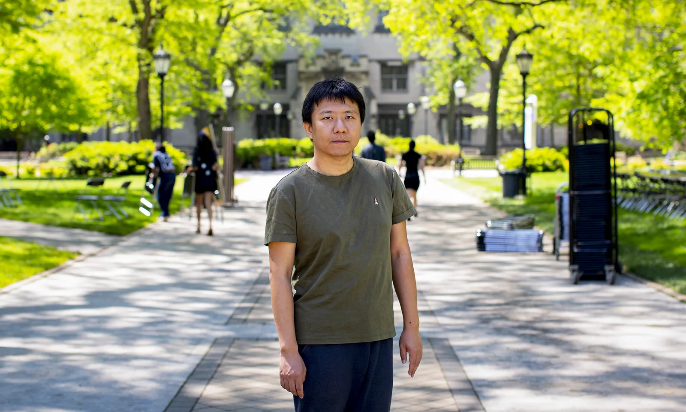
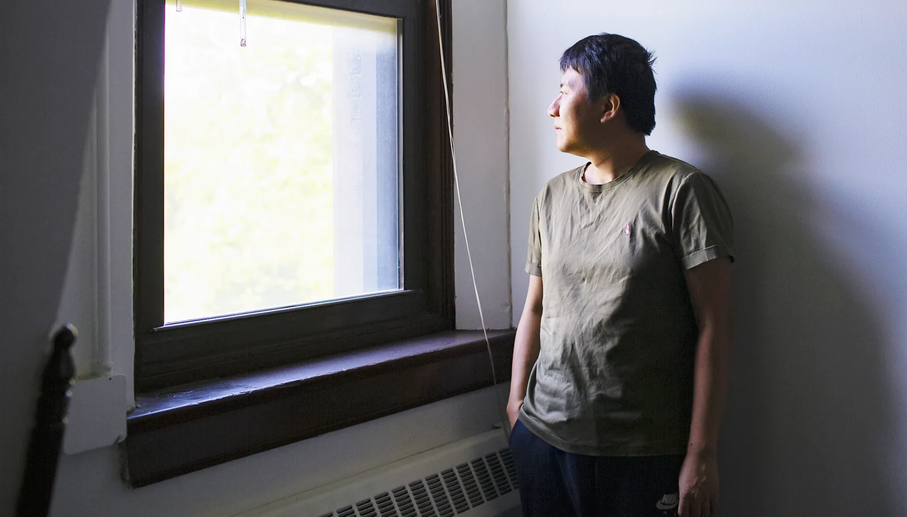
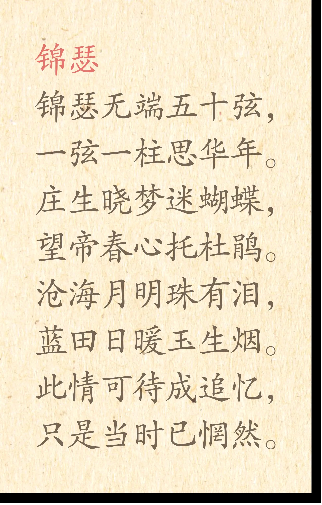
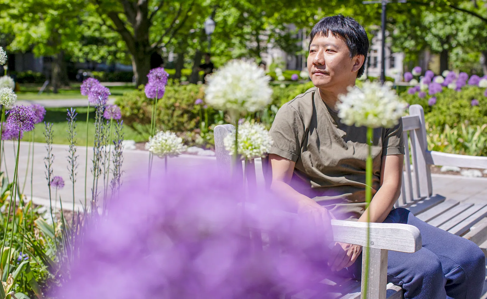
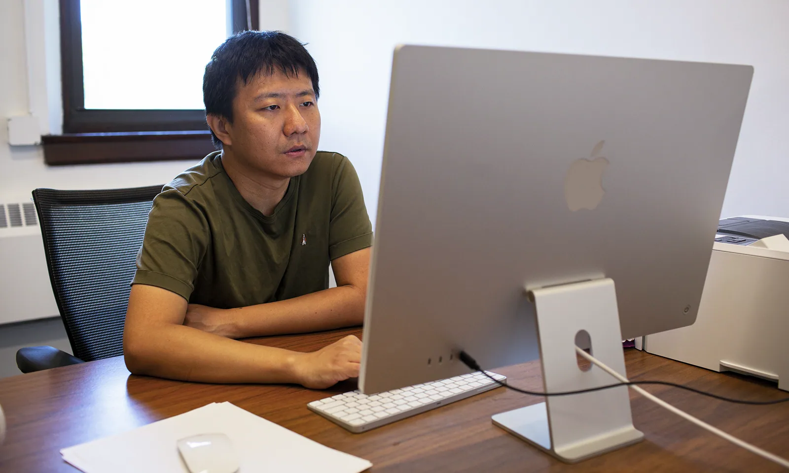
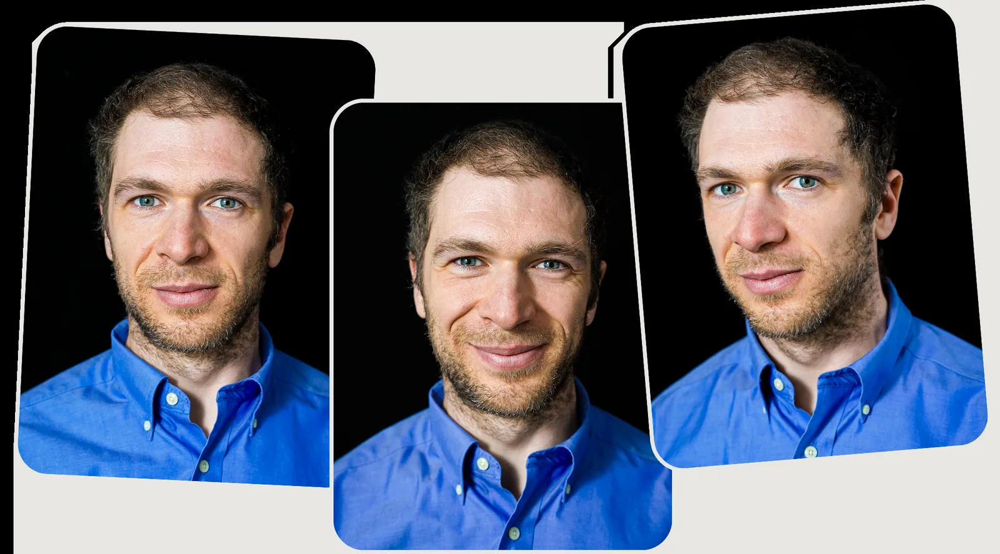
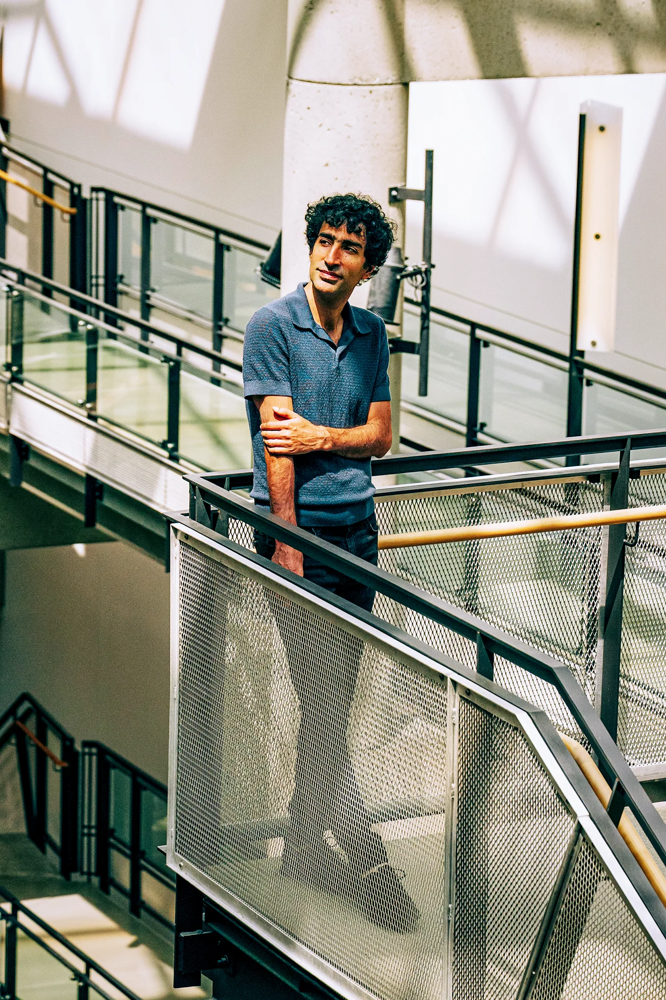

菲尔兹奖·阿巴克斯奖 — 四名 Fields、一名 Abacus
来自 Quanta Magazine 的 ICM 2026 专题报道
2026 年国际数学家大会（ICM）在费城开幕。最引人注目的是：中国籍数学家王虹和邓煜同时获奖，这是 Fields 奖 90 年历史上首次有两位中国籍同届获奖。王虹更是第一位中国籍女性 Fields 奖得主、历史上第三位女性得主。
中国桂林人 · 调和分析与几何测度论 · IHES / NYU · 35岁 · 第三位女性得主
📖 阅读成长历程 →获奖者必须在颁奖年 1 月 1 日前未满 40 岁
每四年在 ICM 上颁发，每次 2-4 人
约 15,000 加元（荣誉远大于金额）
每人只能获得一次（与诺贝尔奖不同）
国际数学联盟评选，无国籍限制
⚡ 为什么 2026 年是历史性的？
王虹是 Fields 奖 90 年历史中第三位女性得主（前两位：Maryam Mirzakhani 2014, 乌克兰数学家未提及）。两位中国籍同届获奖——不仅是数学实力的体现，也反映了中国数学教育体系的培养成果。
王虹（Hong Wang），1990/1991 年生，广西桂林人。35 岁获得 Fields Medal，是第三位女性得主、第一位中国籍女性得主。研究方向是调和分析与几何测度论的交叉——核心是三维 Kakeya 猜想。
三维 Kakeya 猜想 · 调和分析 / 几何测度论 · IHES / NYU · 桂林人 · 北京大学 → École Polytechnique → MIT 博士
1990 年代，王虹在桂林长大。父母都是学校老师，对她的学业没有任何压力。放学回家，她读希腊神话、哈利·波特和《指环王》，看电视，打乒乓球。一家三口会在傍晚沿着漓江散步。
但数学天赋很早就显露了。每次拿到新课本，她会在开学前把所有习题做完；做完后就去书店买更多数学书，继续做。
王虹的目标是北京大学数学系。但北大在她们省只招一个数学系名额，她的分数不是最高。她以地球科学专业考入北大，计划转系。地球物理学的教授鼓励了她——地震波探测地球内部的数学，恰好跟 Kakeya 问题有关。她拼命努力，最终转系成功。
2011 年到法国巴黎综合理工读研。不会法语。她觉得自己不够好到做研究——于是转去学建筑了。在巴黎的建筑事务所实习了一个学期。
2013 年 MIT 研究实习，Larry Guth 用极清晰的方式讲了一个与 Kakeya 问题紧密相连的证明。她第二年申请了 MIT 的博士，选 Guth 做导师。一年内，他们一起解决了多个 Kakeya 相关变种。
2020 年疫情期间在普林斯顿高等研究院做博后的王虹转向三维 Kakeya 猜想——已经困扰数学界几十年。她与 Joshua Zahl 合作，假设存在反例→证明其结构自相矛盾。2025 年 2 月发布127 页完整证明。没有发现错误。
NYU 教授 + IHES 任职。两只食指各有一枚戒指——左手银、右手金。早起去华盛顿广场公园看狗。不养狗、不读书——觉得不能有"耗时的奢侈"。仍然觉得自己不够好。三维 Kakeya 解决了，但还有四维、五维。她说希望有一天找回小时候"有无限时间读书"的感觉。
邓煜（Yu Deng），1989 年生于深圳，37 岁获得 Fields Medal。研究：偏微分方程与随机数据的交互——用概率论的灵活工具解决确定性方程的刚性结构。
随机数据 PDE · Gibbs 测度 · UChicago · 深圳人 · IMO 金牌 → 北大 → MIT → Princeton 博士

邓煜出生那年全家搬到深圳——十年前还是渔村。他的蛇口工业区曾是"非常不发达的地区"。几年内变成干净街道、地铁、公园。海报上喊着：时间就是金钱！效率就是生命！
到五六岁就读完了妈妈的医学教科书。

2001 年参加全国职业围棋定段赛——最后三盘，只需再赢一盘。他连输三盘。第二年又试了一次，心思已不在。
"要么围棋，要么数学。既然输了，我就转向数学。"目标：IMO。初三那年没通过第一轮选拔。第二年进国家集训队——没选上六人队。第三年，代表中国参赛，拿了金牌。
IMO 金牌保送北大。两年后转学 MIT——中国极少有人在本科阶段就转。在 MIT 听到 Andrea Nahmod 讲"随机数据问题"，方向锁定。2011 年 Princeton 读博士。

想在随机数据问题上突破——但工具不够用。2017 年博后快结束，没拿到理想教职。他开始写诗——李商隐式的格律诗。独自去长滩海岸徘徊，一周没工作后，"自动感觉需要做数学了"。

2018 年 USC 教职。与 Yue、Nahmod 组队攻克二维薛定谔方程——证明即使从随机粗糙的初始波出发，方程仍有解且 Gibbs 测度不变。后来与 Hani 合作将微观方程与宏观波动力学连接起来。

UChicago 教授。客厅几乎是空的——一张桌子、一块白板、一把扶手椅。"这是一种自由的感觉。"不开车——连驾照都没考——怕开车时脑子飘回数学。读 75 页论文，每周 8 小时，逐行检查每个细节。
除了王虹和邓煜，2026 年还有两位 Fields Medalist 和一位 Abacus Medalist——他们的故事同样值得细读。
André-Oort 猜想证明
🇺🇦 乌克兰裔加拿大 · 38岁
教育：多伦多大学本科 → Princeton 博士（导师 Peter Sarnak）
核心成果：证明 André-Oort 猜想——连接数论与代数几何的深层猜想，将复乘理论推广到 Shimura 簇。
有趣细节：Tsimerman 说数学不是关于"真理与美"，而是关于"赢"。他的思维方式是：先看到终点，再一步步倒推回来。少年时在加拿大数学竞赛中几乎答错所有题，后来连续两年 IMO 金牌。一个充满竞争欲望的人——但他说自己"花了两年时间努力不对 Fields Medal 上瘾"，最后两年还是"允许自己沉迷"。
一句话：用十余年攻克数论与代数几何交叉的高峰 André-Oort 猜想。
辛几何的重大突破
🇺🇸 美国 · 37岁
教育：Princeton 本科（全年级第一毕业） → Stanford 博士
核心成果：辛几何和低维拓扑的突破——用全新的代数工具解决经典几何问题，包括六维流形猜想和纽结理论与辛几何的深层联系。每篇论文都是重量级突破。
有趣细节：Pardon 以沉默著称。一位前学生说："你真的得去打捞他的知识。"大一某次晚宴上，János Kollár 随口向他提起一个拓扑难题——两周后 Pardon 发来了解法，比 Kollár 需要的更一般、更优雅。25 岁时就解决了遗留问题。他不喜欢谈论自己，本科毕业致辞问："你上一次有真正的原创想法是什么时候？"他认为有原创想法≈"部分疯癫"。会拉大提琴，本科期间学中文流利到赢新加坡中文辩论赛。
一句话：用沉默和精确的原创思维重写了辛几何的规则。
旅行商问题算法突破
🇮🇷 伊朗裔 · 39岁
教育：Sharif University of Technology 本科 → UIUC 博士
核心成果：旅行商问题（TSP）的近似算法突破——首次将代数图论与概率论结合，大幅提升近似比。还解决了"从大量对象中均匀随机选择"的基本问题。
有趣细节：伊朗伊斯法罕出生，母亲年轻时被迫放弃学数学（"女孩不应该学数学"），于是把希望寄托在孩子身上。他在伊朗经历了战争、制裁、母校被轰炸。尽管外部动荡，他保持乐观——"我喜欢说事情是可能的"。做研究坐不住，在椅子上转来转去，他妻子笑他"像只猴子"。
一句话：将数论和代数工具引入理论计算机科学，刷新了 TSP 半个世纪的近似记录。


想象三维空间放满了指向每一个方向的无限细的针。Kakeya 猜想说：不管你怎么放，这些针的分布密度必然像三维物体那样——不能压缩成更低维度。王虹和 Zahl 证明：在三维里，你骗不了空间。
PDE 描述了波如何传播——但物理世界的初始条件从来不是平滑的，而是充满噪声。邓煜证明：即使初始条件极其混乱，方程仍然有解，且 Gibbs 测度保持稳定。他还证明了微观薛定谔方程在长时间下会收敛到宏观波动力学方程。
下面是一维→二维→三维的 Kakeya 直觉：一根针旋转需要的最小区域。
王虹和邓煜的成长轨迹有很多相似之处——也有很多不同。这些故事不是在教你怎么当数学家，而是在展示：一个人怎么一步一步变成他自己。
| 维度 | 王虹 | 邓煜 |
|---|---|---|
| 出身 | 桂林，父母都是老师，宽松自由 | 深圳渔村，母亲医生，父亲工程师 |
| 童年 | 读书+做题当娱乐 | 读书（连妈妈医书都读）+ 下围棋 |
| 第一次"不行" | 没考上北大数学系 | 围棋定段赛最后三盘全输 |
| 应对失败 | 地球科学进北大→转系→转建筑→回来 | 转向数学，IMO 连续失败两次才成功 |
| 低谷 | 觉得自己不够好做研究 | 博后没拿到理想教职 |
| 走出方式 | "只管去理解，别担心够不够好" | 写格律诗，读漫画，独自去海边 |
| 核心成果 | 三维 Kakeya 猜想（127 页证明） | 随机数据 PDE 可解性 + 波动力学收敛 |
| 今天 | 早起散步看狗，不读书不养狗 | 空客厅，不开车，读漫画逐行读论文 |
这些故事不是说"你要努力成为 Fields 奖得主"——那离你太远，而且不是每个人都需要成为 Fields 奖得主。
它们在说更简单的事：
"你可以在任何年龄、任何阶段停下来，问自己——我想走的路，是不是我自己选的。"
王虹转系、邓煜转数学、王虹去学建筑又回来、邓煜在最迷茫时写诗——都在做同一件事：在每一个可能被人推着走的路口，选择自己走。
2026 年 7 月 23 日 Quanta Magazine ICM 2026 系列报道。
照片：Julien Pebrel/M.Y.O.P.（王虹）、Kristen Normand（邓煜）、Caroline Gutman（Tsimerman）、Phil Yam（Pardon）、Chona Kasinger（Oveis Gharan）